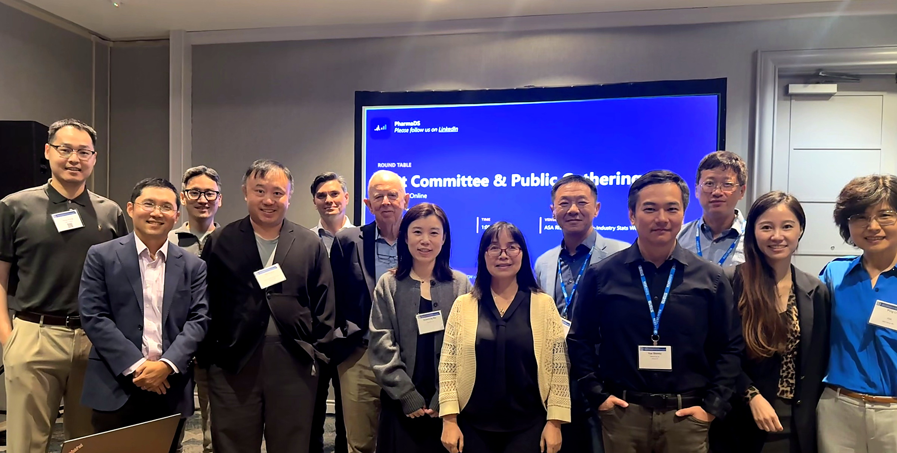
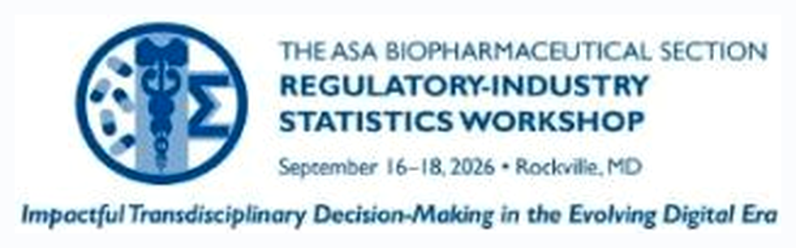

Bethesda, MD · September 16, 2026
in the room + on Zoom
Thank you for joining us at
RISW 2026 First PharmaDS Committee Meet-Up & Community Round Table
“Shape the Future of Pharma AI · Build the Community · Get Involved”
What came out of the room
- —A live survey of what this community cares about most
- —The first real shape of the PharmaDS 2027 conference theme
- —People signing up to keep building this between conferences
What’s coming next
01The survey results
022027 theme & topics
03What makes us different
Thank you to everyone who joined us — in the room and on Zoom — and to the ASA Biopharmaceutical Section for hosting us within RISW 2026.

PharmaDS
phds.nestat.org